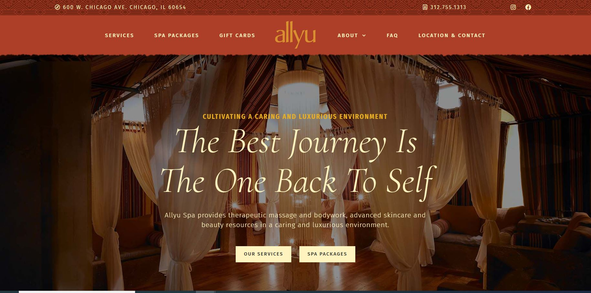

Mission Statement
Provide information to end users and make the web page simple and easy to navigate.
Goals
- Introduce the company and owner.
- Share details of available services and cost.
- Offer a contact me for more information page.
The reason I chose this site was because the type of site I am building will be focused on services being provided. I really like how simple and easy to read the site is. Also, the color scheme selected makes it warm and inviting.
About Us
This page will be to share background about the company. Focus on their mission and vision statements. Additionally provide information of the owner/technician who provides services.
Services
Focus on this page is noting what services are available, what they are, time per session and cost.
Contact Me
Where to contact for more information. Opportunity to submit a contact customer section.